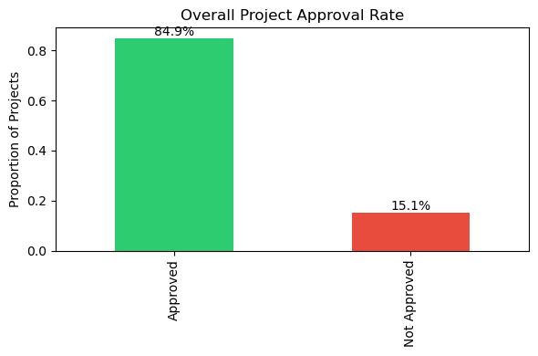
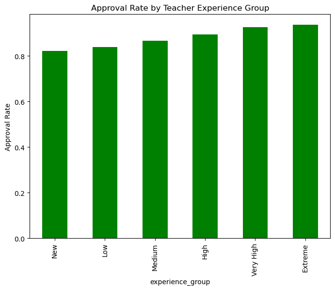
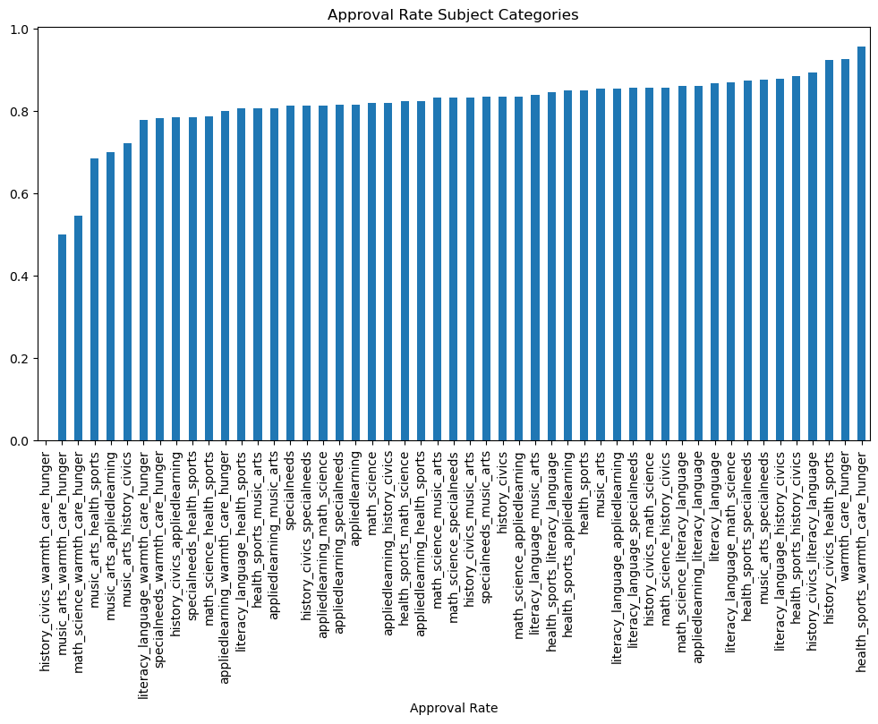

Funding the Gap: What Drives Project Approval on DonorsChoose?
Introduction
DonorsChoose enables teachers across the United States to request funding for classroom projects, ranging from basic supplies to advanced learning tools.
While a large majority of projects are approved, a meaningful share are not—leaving some classrooms without the resources they need.
Understanding why certain projects succeed while others fail is critical for improving fairness, access, and impact on the platform.
This project examines historical DonorsChoose data to uncover the key factors associated with project approval.
By translating complex patterns into clear, evidence-based insights, the analysis aims to help educators, donors, and platform designers make better-informed and more equitable decisions.
Business Questions
To understand what drives project approval on DonorsChoose, the analysis focuses on the following questions:
Which project characteristics most strongly influence approval outcomes?
How do project cost and requested quantity affect approval likelihood?
Does teacher experience improve the chances of project success?
Are certain subject categories consistently advantaged or disadvantaged?
Overall Approval Landscape

Approximately 85% of projects on DonorsChoose are approved.
Although this suggests that the platform is broadly accessible, the remaining 15% represents thousands of classrooms whose requests are not funded.
This gap indicates that approval is selective rather than automatic, motivating a closer examination of what differentiates approved and rejected proposals.
Does Project Cost Influence Approval?
Approval rates decline steadily as project cost increases, showing that financial scale is a key factor in funding decisions.
Lower-cost projects consistently achieve higher approval rates, suggesting that donors and reviewers favor requests with clearer and more immediate cost–impact tradeoffs.
Cost alone does not determine approval, but it places a strong constraint on what is likely to succeed.
How to read this plot (with examples):
The left panel shows the distribution of project costs for approved (1) and not approved (0) projects.
Both distributions overlap, indicating that expensive projects can still be approved.
The right panel shows approval rate across increasing price ranges.
As we move from left to right, approval rates decline steadily.
For example, projects in the lowest price range (far left) have approval rates above 90%,
while projects in the highest price range (far right) drop closer to 75–80%.
This contrast shows that while cost does not automatically reject a project, higher budgets significantly reduce the probability of approval.
The Role of Teacher Experience

Teacher experience is positively associated with approval likelihood.
Projects submitted by experienced teachers are approved at higher rates, likely due to better proposal framing, realistic budgeting, and familiarity with platform expectations.
However, many projects from less experienced teachers are also approved, indicating that experience improves success probability but is not a strict requirement.
Cost and Experience: An Interaction Effect
When project cost and teacher experience are examined together, a clear interaction emerges.
High-cost projects experience lower approval rates regardless of teacher experience, while low-cost projects maintain high approval even when submitted by new teachers.
This pattern suggests that cost constraints dominate approval outcomes once project budgets become large.
How to read this heatmap (with examples):
The horizontal axis represents teacher experience levels, from new teachers on the left to highly experienced teachers on the right.
The vertical axis represents increasing project cost ranges.
Each cell shows the approval rate for projects with a specific combination of cost and experience.
Brighter (green/yellow) cells indicate higher approval rates, while darker (blue/purple) cells indicate lower approval.
For example, in the lowest cost range (bottom row), approval rates remain very high across all experience levels—even for new teachers.
In contrast, in the highest cost range (top row), approval rates are consistently lower, even for highly experienced teachers.
This shows that while experience improves outcomes at moderate costs, it cannot fully offset the negative impact of very high project budgets.
What Does (and Doesn’t) Correlate with Approval?
This heatmap shows the strength and direction of linear relationships between numeric project features and approval outcomes.
Correlation values range from -1 (strong negative relationship) to +1 (strong positive relationship),
while values near 0 indicate little to no linear association.
How to read this plot:
A positive value means both variables tend to increase together.
For example, the heatmap shows a small positive correlation between
teacher experience and project approval,
suggesting that more experienced teachers are slightly more likely to be approved.
A negative value means one variable increases while the other decreases.
In this plot, project cost has a weak negative correlation with approval,
indicating that higher-cost projects are marginally less likely to be approved.
Near-zero values dominate the heatmap, meaning no single numeric feature
strongly predicts approval on its own.
Overall, the heatmap confirms that approval decisions are not driven by any single numeric factor.
Instead, approval appears to depend on combinations of factors—such as cost interacting with experience or subject type—
along with qualitative aspects that are not captured by simple correlations.
Project Scale: Quantity and Price Combined
This bubble chart combines quantity, total project cost, and approval outcomes into a single view.
Bubble size represents the number of projects in each price–quantity bucket, while color indicates the approval rate.
How to read this plot (with examples):
Each bubble represents a combination of quantity range (x-axis) and price range (y-axis).
Larger bubbles indicate that more projects fall into that category.
Green bubbles indicate higher approval rates, while red/orange bubbles indicate lower approval rates.
For example, the bottom-left region (low quantity, low price)
shows the greenest and largest bubbles, meaning these projects are both common and highly likely to be approved.
In contrast, the top-right region (high quantity, high price)
contains smaller, redder bubbles, indicating fewer projects and the lowest approval probabilities.
Overall, the plot shows that approval likelihood decreases as projects become larger in both scale and cost.
Approval decisions are therefore sensitive to the combined burden of quantity and budget, not either factor in isolation.
Differences Across Subject Categories

Approval rates vary noticeably across subject categories.
Some subjects consistently perform above the overall average, while others lag behind.
These differences likely reflect donor preferences and perceived urgency rather than inherent project quality, raising concerns about whether certain educational needs are systematically underfunded.
Key Insights
Project approval on DonorsChoose is not random; it follows clear and consistent patterns.
Lower-cost, well-scoped projects have the highest likelihood of approval.
Teacher experience improves approval probability, but it does not guarantee success.
Project cost becomes the dominant constraint once budgets grow large.
Certain subject categories receive consistently stronger donor support than others.
Recommendations
Support new teachers with structured onboarding:
Clear proposal-writing guidance and examples can reduce early disadvantages caused by inexperience.
Encourage realistic budgeting and project scoping:
Tools that flag unusually large or high-cost requests can help teachers align proposals with approval norms.
Increase visibility for underfunded subject categories:
Targeted donor campaigns or rotating spotlights can help balance attention across educational needs.
Monitor approval equity on an ongoing basis:
Regular audits of approval patterns can detect emerging disparities and guide timely policy adjustments.
Next Experiments
Analyze proposal text clarity, structure, and sentiment in relation to approval outcomes.
Study time-to-approval differences across project types and cost levels.
Explore district- and school-level inequalities in funding success.
Build predictive models to flag high-risk proposals and provide early feedback.
Conclusion
This analysis demonstrates that project approval on DonorsChoose is shaped by a combination of financial realism, project scope, subject type, and teacher experience.
While experience and subject matter influence outcomes, project cost—especially when paired with large scale—places the strongest constraint on approval likelihood.
By identifying where approval barriers arise, DonorsChoose can better support new teachers, improve fairness across subject areas,
and ensure that limited donor resources are directed toward projects with the greatest educational impact.